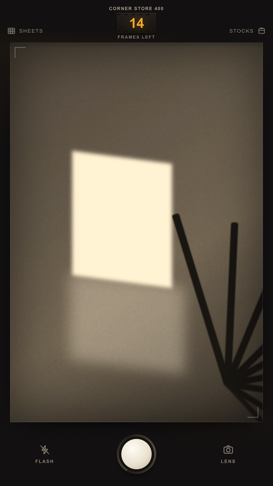
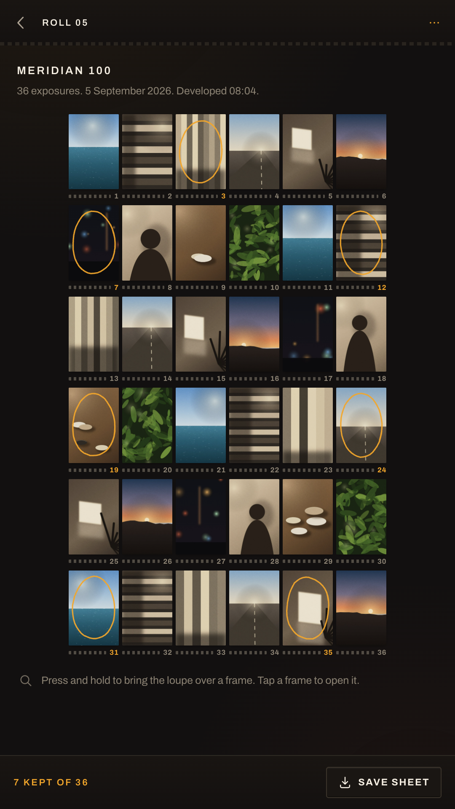
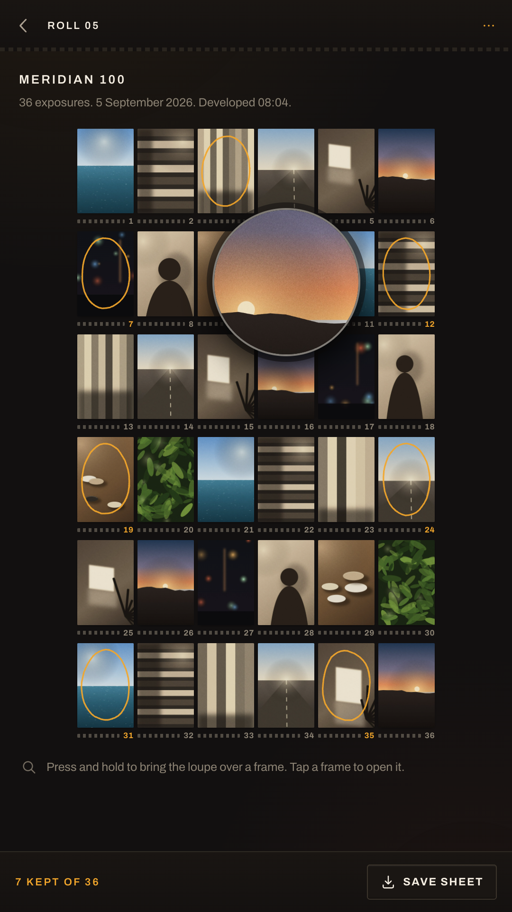
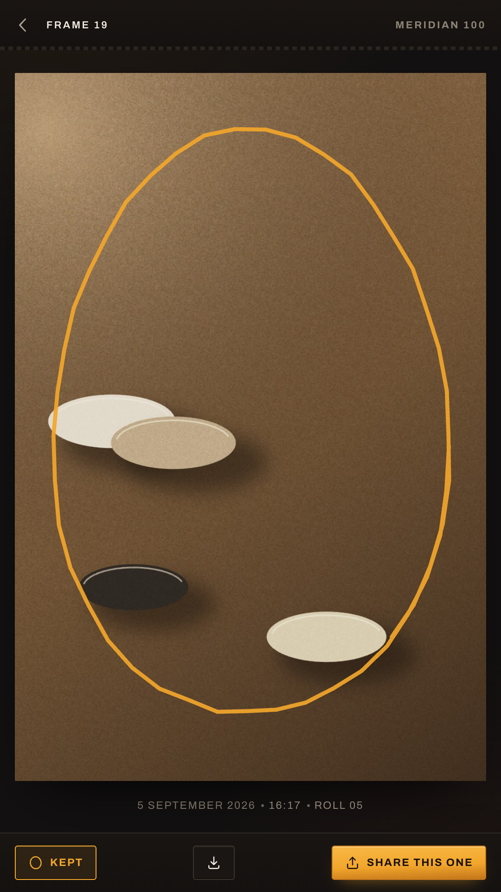
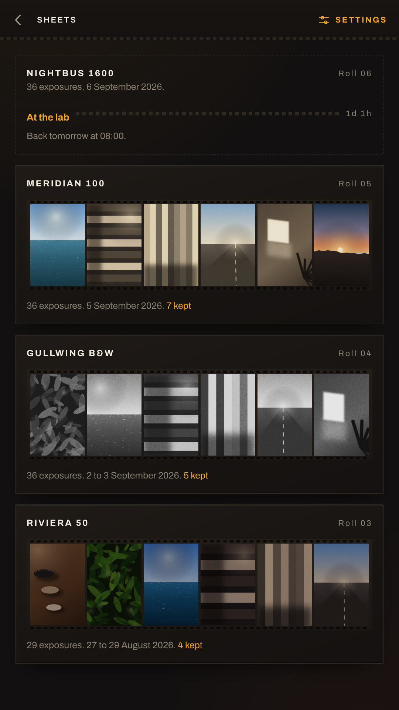

A camera with a roll in it. No preview, no deleting, no gallery to fall into. Your pictures come back developed at eight the next morning, all thirty-six at once, on a contact sheet.
Free and complete. No account, no purchases, no ads, and no internet permission.

Photography used to be anticipation. This is an app about wanting a picture again.
When they are gone, the roll is gone. Frames are never given back, and no setting anywhere changes that.
After the shutter there is nothing to look at. Not a thumbnail, not a gallery. Only a counter going down.
A finished roll goes to the lab and comes back the next morning. The counter shuts at eight in the evening, like a real one.
Six strips of six at true 135 pitch, a loupe under your thumb, and a grease pencil for the ones worth keeping.

The morning after
Thirty-six frames laid out together is a completely different thing from thirty-six photographs scrolled one at a time. You see the run of them. You see the four you shot of the same doorway and which one was right. You see the frame you had forgotten taking.
Development runs on your phone while you wait, frame by frame, and it takes about as long as making coffee. Then the sheet is yours: circle the keepers, save any frame at full size, save the whole sheet as one picture for the group chat.
Thirty-six frames on one screen are small on purpose. That is what a loupe is for, and it is the best gesture in the app.



A stock here is not a filter laid over the top. It is a response curve for each colour channel, a grain structure, a halation threshold and a list of quirks it owns up to on the box. Turn any box over to read its spec sheet.
The frame is taken from the live stream at the geometry of a 135 negative, held upright, and written straight to the app's own storage. Nothing shows it to you.
When you hand the roll in you can ask for a push or a pull. You choose blind, before you have seen a single frame, which is the only way it was ever done.
Each colour channel gets its own curve: shadow lift, gamma, and a shoulder where the highlights give way instead of clipping. Black and white gets the old panchromatic weighting, so reds go a shade darker than your eye expects.
Synthesised at the frame's own resolution rather than laid on as a texture, clumped by the stock's roughness, and weighted to the midtones where the silver actually sits.
Everything above the stock's threshold blooms and bleeds a red edge into the dark beside it. Nightbus 1600 does this generously. Riviera 50 barely at all.
Corner Store 400 fogs frames one and thirty-six from the cassette mouth, and about one frame in ten comes back a stop under. Statik drifts colour frame to frame from its own seed. The box says so.
Load a roll. Then go and use your eyes.
Try it in your browserThe browser version is the same app the phone runs, so it needs camera access to take a frame. Everything stays in your browser.